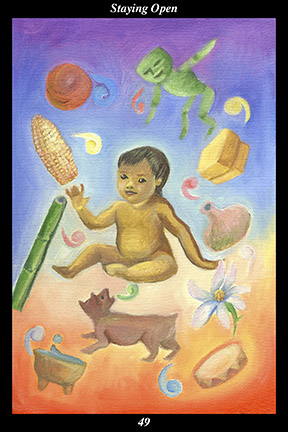

 | IMAGE An infant beholds the many diverse items in its surroundings, each of which is calling to the child. The speech glyphs representing each article’s voice are of different colors in order to show that the child’s natural curiosity leads it to be fascinated by a wide array of interests. |
INTERPRETATION
This hexagram depicts the openness of heart and mind and spirit of those who are adapting to the future. The infant symbolizes the living potential dwelling within every individual. The diverse objects around the child represent all the possible paths, both external and internal, lying before every individual at every turn. That the infant’s attention is drawn to each of the interests means that you look at everything as an opportunity to develop yourself further. Taken together, these symbols mean that you are not adapted to one particular environment but, rather, to any environment.
ACTION
Spirit warriors do not lose heart when they realize they do not fit with their present surroundings. Instead, they maintain their training and discipline by exploring a wider range of interests and cultivating a wider variety of skills. This is an especially bad time to tolerate feelings of disappointment, lethargy, or self-pity: it is essential to keep in mind that the problem is simply the absence of meaningful opportunities facing you. Times change, inevitably bringing with them new opportunities. This is a time to prepare for the coming change by working to be adapted beforehand to the new environment. Because you are above all else adapted to learning and observation, you are in truth at home in any surroundings. But being able to survive is not as good as thriving—and even thriving is not as good as being able to contribute to the lives of others. By utilizing this time to build on your innate potential to learn and observe, you develop the knowledge and skills that enable you to take advantage of coming opportunities in a way that brings
benefit to all in your surroundings. Avoid specializing in one area at this time: because many of our capabilities are unknown to us until the opportunity to develop them presents itself, this is the time to energetically train for unknown opportunities rather than to resignedly commit to a meaningless and unfulfilling way of life.
INTENT
The ideal society is just like the ideal family, existing to afford every member the opportunity to develop their full potential: in times of darkness, on the other hand, authoritarianism restricts the creation of new opportunities and channels people into meaningless activities that
benefit only those in authority. Likewise, societies change just like families, transforming their goals and relationships with the passing of each generation: whereas those who thrive in times of darkness cannot conceive a time of light, those who thrive in times of light can all too readily envision a return to darkness. Whether it is the individual, family, society, or humanity as a whole, the cycles of the pendulum’s swings between the closing down and opening up of meaningful opportunities establishes the fundamental circumstances against which all actions take place and all decisions are made. The best way to contribute to the lives of others is to nurture and encourage their efforts to further develop their own potential. In this way, you materially assist others and help transform the fundamental circumstances within which all live.
SUMMARY
Cultivate as wide a range of interests and relationships as possible. Avoid the tendency to focus on one specific thing or person at this time. Cultivate breadth, not depth. It is a time of exploration, so follow your curiosity. Do not jump at the first opportunity or commit yourself to a single course of action now. Keep all your options open while you prepare for future opportunities.
THE LINE CHANGES
1° Arrogance and gratitude are antithetical—but humility and gratitude go hand-in-hand. Only those who sense the existence of something greater than themselves are humble and grateful. Continue to devote yourself to something more than the materialistic pursuit of success and recognition.
2° False modesty is more arrogant than outright arrogance—mere pretense is not equal to actually mastering the animal drives and emotions. A big fish in a little pond should not eat everything else in the pond. Cultivate authentic humility by pouring out sincere gratitude with every heartbeat.
3° Believe in those around you, support their efforts, and encourage them when times are trying. When they see how this attitude results in your own accomplishments, their confidence will be renewed and they will redouble their efforts. Use your strengths to bolster others from below.
4° To be subservient to someone with less skills, intelligence, or experience is more than most people can endure with grace and poise. Yet these circumstances are so common that no one should be unnerved by them anymore. Hold the moral high ground and graciously serve your ideals.
5° When those dependent on you interpret your humility as weakness, then they will be emboldened to criticize and undermine your efforts. You may try to correct them but it will not take, since they cannot lose face with their peers. The sooner and more decisively you root them out, the better.
6° When those outside interpret your humility as weakness, then they will be emboldened to increase themselves at your expense. You should have already anticipated this inevitability. Now, use your yielding demeanor to draw the opponent into overreaching and then spring the trap.